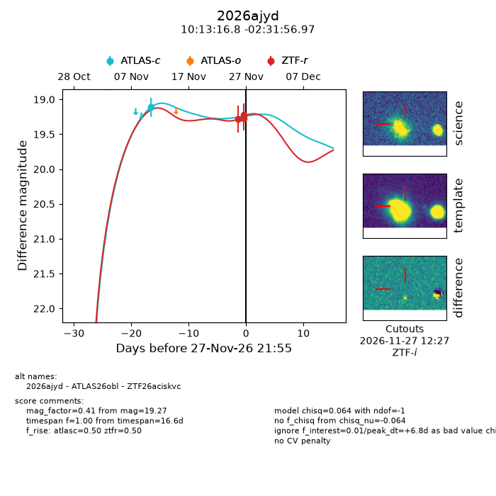
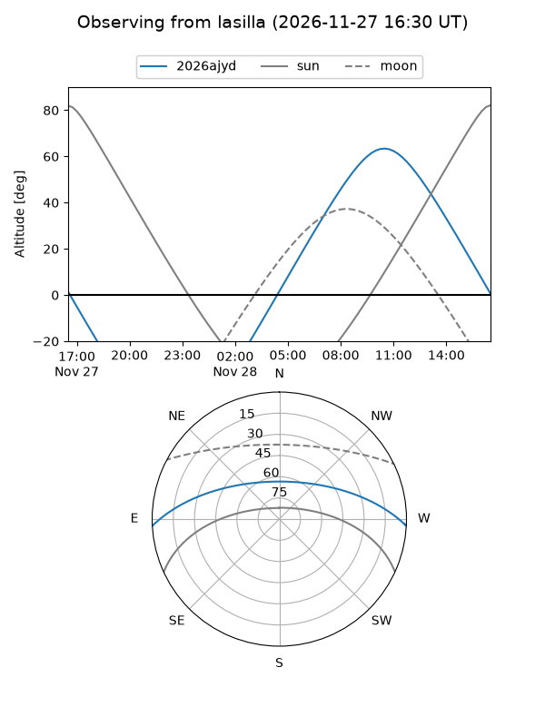
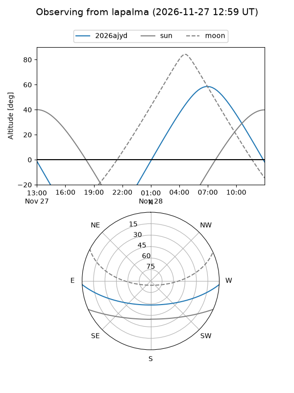
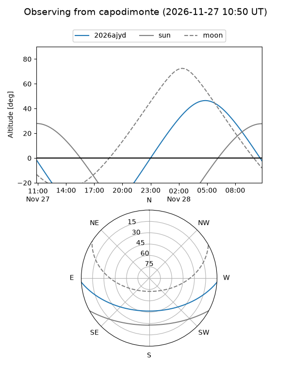
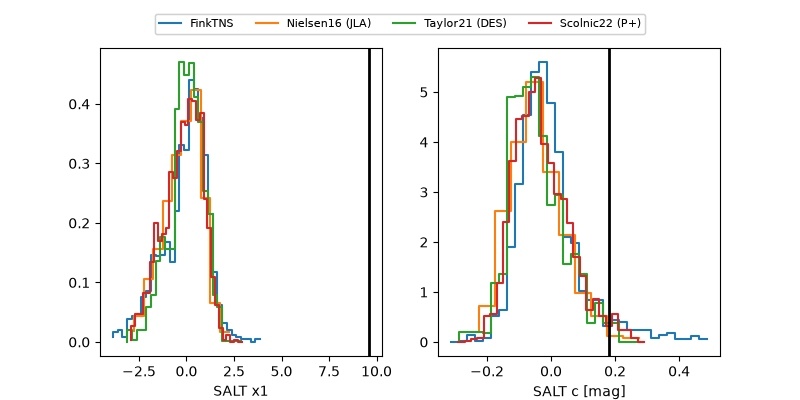

2026ajyd
Target 2026ajyd at 2026-11-27 21:56
Aliases and brokers:
FINK-ZTF: ztf.fink-portal.org/ZTF26aciskvc
Lasair-ZTF: lasair-ztf.lsst.ac.uk/objects/ZTF26aciskvc
ALeRCE-ZTF: alerce.online/object/ZTF26aciskvc
YSE-PZ: ziggy.ucolick.org/yse/transient_detail/2026ajyd
TNS name: wis-tns.org/object/2026ajyd
Direct TNS query: direct search
alt names
ZTF26aciskvc (ztf,fink_ztf)
2026ajyd (tns,yse)
ATLAS26obl (atlas)
Coordinates:
equatorial (ra, dec) = 153.3199,-2.53249
equatorial (HMS+DMS) = 10:13:16.78,-02:31:56.97
galactic (l, b) = (244.4905,+41.72277)
Flags:
peak dt: +6.8
Photometry:
last atlasc=19.11, ztfr=19.27
1 atlasc, 3 ztfr detections
Lightcurve

Visibility



Additional plots
